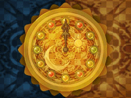
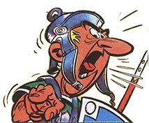

You were right: it is 12pm.
Now, the city had a different vibe, more Roman, it was a mix between a bit of modern and a bit of ancient Roman architecture, making it quite exotic.
Suddenly a group of people in Roman warrior outfit, stopped a few meters in front of you and the leader shouted: "Hey you! What are you doing here?! Stop him!" And the rest of the group did as he said: they ran in your direction you.
You didn't know what was going on but your feet started to ran too. You arrived in a quieter street. You were catching your breath when you heard agitated running sound; they were close and obviously hadn't gave up yet. However a sign catched your attention: a common door with "E-X-I-T" on it.
"Here! I found the intruder!" A warrior screamed.
"Ding, ding!" You also heard the bus arriving.
What are you going to do?